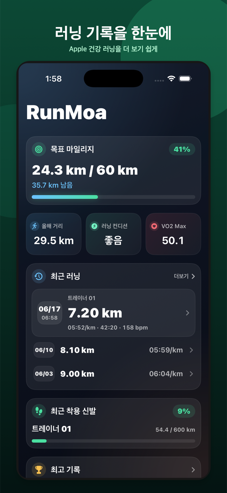
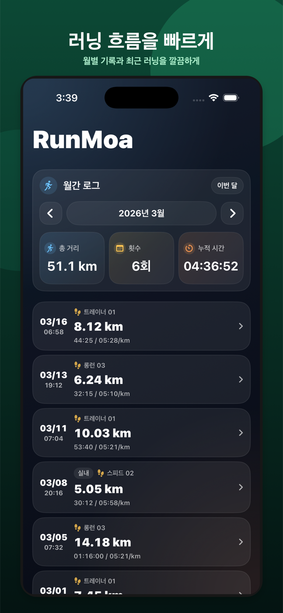
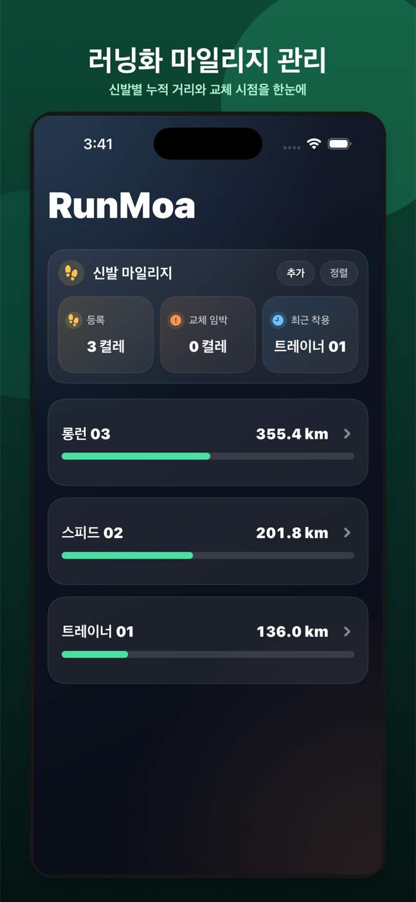
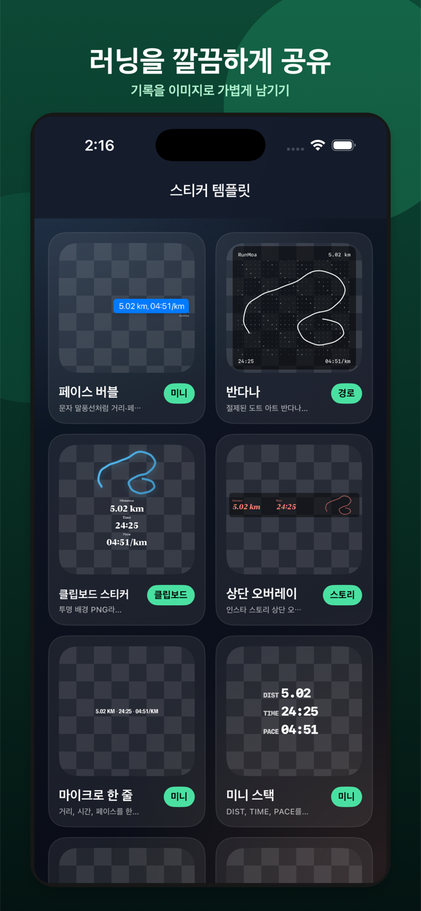

월간·연간 마일리지
목표와 누적 거리를 함께 보며 러닝 흐름을 확인합니다.
Apple Watch 러닝 기록을 더 잘 보는 방법
Apple Watch 운동 앱이 Apple 건강에 저장한 러닝 기록을 마일리지, VO₂ Max, 예상 기록, 러닝화 관리와 공유 스티커까지 한곳에서 확인하세요.
iPhone 전용 · 무료

기록을 더 잘 이해하는 방법
기록을 새로 만들거나 훈련을 지시하지 않습니다. 이미 Apple 건강에 쌓인 러닝을 보기 좋게 정리합니다.
목표와 누적 거리를 함께 보며 러닝 흐름을 확인합니다.
페이스, 심박, 케이던스와 구간 기록을 자세히 봅니다.
현재 지표와 기록을 러닝 참고 정보로 살펴봅니다.
개인 기록과 신발별 누적 거리를 한곳에서 관리합니다.
거리와 페이스, 경로를 깔끔한 이미지로 남깁니다.
공식 지원 범위
RunMoa는 iPhone에서 사용하는 앱이며, Apple Watch의 기본 운동 앱이 Apple 건강에 저장한 러닝 기록을 기준으로 완전한 표시와 계산을 지원합니다.
지원 범위 자세히 보기개인정보
RunMoa는 별도 계정을 요구하지 않습니다. Apple 건강 러닝 기록, 경로 좌표, 심박 샘플, 러닝 메모와 신발 데이터는 개발자 서버로 업로드하지 않으며, 배포 버전에서는 앱 안정성과 사용 흐름 확인을 위해 Firebase Analytics와 Crashlytics를 사용합니다.
개인정보처리방침 보기실제 화면
복잡한 설정 대신, 러닝이 쌓이는 순서대로 필요한 화면을 구성했습니다.


